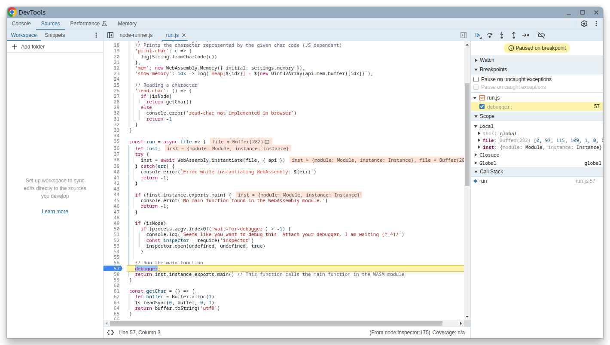

Last updated on
Lab 06 - Compiler WASM
In this fifth lab, you will implement the code generation phase to generate WebAssembly. Recall that a transpiler is a compiler that translates code from one programming language to another language meant to be read and modified by humans. In this case, WebAssembly is not meant to be read or modified by humans, therefore, we use the name compiler instead.
Obtaining the lab files
As usual, you can obtain the lab files from the course’s Git repository or from the zip archive on Moodle. Then, copy the following files into your project:
alpine/
├── src/
│ ├── main/
│ │ ├── scala/
│ │ │ ├── alpine/
│ │ │ │ ├── driver/ <----- COPY FROM THIS WEEK FILES
│ │ │ │ ├── evaluation/
│ │ │ │ ├── parsing/
│ │ │ │ ├── util/
│ │ │ | ├── codegen/
│ │ │ | | ├── CodeGenerator.scala <----- COPY FROM THIS WEEK FILES
│ │ │ | ├── wasm/ <----- COPY FROM THIS WEEK FILES
│ │ │ ├── Main.scala <----- COPY FROM THIS WEEK FILES (replace the current one)
├── test/
| ├── res/
| │ ├── codegen/ <----- COPY FROM THIS WEEK FILES
│ ├── scala/
│ │ ├── alpine/
| | | ├── codegen/ <----- COPY FROM THIS WEEK FILES
│ │ │ ├── evaluation/
│ │ │ ├── parsing/
| | | ├── transpiler/
| | | | ├── TranspilerTests.scala <----- COPY FROM THIS WEEK FILES (to run this week's tests with the Transpiler)
│ │ │ ├── util/
├── wasm/ <----- COPY FROM THIS WEEK FILES
Dependencies
Test dependencies: Node.JS and NPM
To be able to run WebAssembly code, you need to have the proper environment installed, including the WebAssembly virtual machine.
It is required to have the following dependencies installed in your system:
- Node.js, with the latest LTS version (20)
- On Windows, use the installer
- On Linux, macOS, or Chocolatey, use Download Node.JS
To ensure that Node.js is properly installed, run the following command in your terminal, which should print a version number:
node -v
You will also need Node Package Manager (npm). npm is usually bundled with Node.js and should be installed if you followed the instructions above. To ensure that it is properly installed, run the following command in your terminal, which should print a version number:
npm -v
If you decide to install Node.js with another technique (e.g. that may be specific to your Linux distribution), make sure that npm is installed as well.
Test dependencies: wat2wasm
You will also need the wat2wasm tool to compile WebAssembly text files to binary files.
wat2wasm is part of a WebAssembly Development toolkit named wabt. To install it, please follows the instructions on the official GitHub repository.
Make sure that wat2wasm is properly installed by running the following command, which should print a version number:
wat2wasm --version
Debugging dependency: Chrome/Chromium (recommended)
Consider using Chrome and Chromium, as they offer a good debugging experience for WebAssembly.
Any other browser/code editor/IDE that supports WebAssembly debugging can be used (e.g. VSCode).
Web Assembly introduction
WebAssembly is a binary instruction format for a stack-based virtual machine.
Instructions
The instructions are defined in the WasmTree.scala provided file. Usually, instructions are represented as a string, e.g. i32.add to add two 32-bit integers.
A list of instructions along with its documentation is given in the same file.
As an example, this WASM program adds two numbers (note that ; is use to start comments):
; empty stack
i32.const 1 ; pushes 1 to the stack
; stack = [1]
i32.const 2 ; pushes 2 to the stack
; stack = [1, 2]
i32.add ; pops two values from the stack, adds them, and pushes the result
; stack = [3]
We will only use a subset of the instructions in this lab, namely the floating points, integer arithmetic operations – 32 and 64-bits – and linear memory.
We recommend that you read WasmTree.scala to understand WebAssembly instructions.
Functions
WASM supports functions, which are defined by a sequence of instructions, local types (if any) and the return type (if any).
As an example, this WASM program defines a function that adds two numbers:
(func $add (param i32 i32) (result i32)
local.get 0
local.get 1
i32.add
)
Its equivalent representation in the provided WASM Scala tree would be:
FunctionDefinition("add", params = List(I32, I32), returnType = Some(I32), body =
List(
LocalGet(0),
LocalGet(1),
IAdd
)
)
Return type
The return type annotation of a function is optional in WebAssembly: if no annotation is given, the function returns nothing on the stack (in other words, it is equivalent to a function returning Void or Nothing in Scala).
That is why the return type of functions in the Scala tree is an Option.
If the WebAssembly function isn’t supposed to return anything, its return type in the Scala tree should be None.
If the function returns a value, the return type is Some(type), where type is the type of the return value (i.e., I32, F32, I64, or F64).
If it returns something, the function should end with only a single element of the specified type on the stack.
If it should return nothing, it should return with an empty stack.
Calling functions
For a function f, having n parameters,
// expects n parameters on the stack
// stack = prev ++ [param1, param2, …, paramn]
Call("f")
// if f returns a value, the stack will be prev ++ [result]
// if f returns nothing, the stack will be prev
Locals
Locals are variables that are only accessible within the function. They can be get/set by the local.get and local.set instructions.
FunctionDefinition("util", locals = List(I32, I32) body =
// first local ↑ ↑ second local
List(
// stack = []
IConst(42),
// stack = [42]
LocalSet(0), // sets the first local
// stack = []
LocalGet(0), // gets the first local
// stack = [42]
Call("print"), // prints the value
// stack = []
)
)
Parameters of a function are also locals. The accessing order is first params in order, then locals.
Main function
The runtime expects a function named main that does not take any parameters and can possibly return a value.
Such a function can be defined as follows in the provided WASM Scala tree:
MainFunction(body = …, returnType = …)
It is mandatory to use that case class to define the main function because it needs to be exported as main, and NOT defining a normal function named main. It is also mandatory to define at least a main function.
Modules
A WASM module is a collection of functions and imports. The module is the top-level structure of a WASM program.
In our case, we will only use the FunctionDefinition, ImportFromModule and ImportMemory.
We will generate a single WASM module that contains all functions and imports of the Alpine program.
ImportFromModule
WASM allows to import functions. A module can be a WASM file or a JavaScript file.
The idea is similar to the rt/runtime module that we used in the previous lab. The WASM file is going to be ran in a JavaScript environment, and we can import functions from the JavaScript environment, e.g. print-int.
As a reference, you can use the following list of imports:
Module(
List(
// Import `api.print` as `print`, a function that takes an integer and returns nothing (prints a number)
ImportFromModule("api", "print", "print", List(I32), None),
// Import `api.print` as `fprint`, a function that takes a float and returns nothing (prints a floating point)
ImportFromModule("api", "print", "fprint", List(F32), None),
// Import `api.print-char` as `print-char`, a function that takes an integer and returns nothing (prints a character)
ImportFromModule("api", "print-char", "print-char", List(I32), None),
// Import the linear memory
ImportMemory("api", "mem", 100)
),
List(… functions …)
)
Linear memory
WASM supports linear memory, which means that the memory the program can access is a contiguous array of bytes. The program uses this memory to store data that is not on the stack (more commonly known as a heap).
For instance, to store the number 0xdeadbeef at location 0 of the linear memory, you would use the following piece of code:
i32.const 0 ; index
i32.const 0xdeadbeef
i32.store
which in the provided WASM tree would be:
List(
I32Const(0),
I32Const(0xdeadbeef),
IStore
)
Please note a few things:
- the memory is addressed in bytes, so you need to compute the correct index by using the sizes of the elements you are storing (e.g. 4 bytes for an
i32). - WASM is little endian (meaning that the least significant byte is stored first). For instance, with the above example, the memory would contain:
mem[0] = 0xef
mem[1] = 0xbe
mem[2] = 0xad
mem[3] = 0xde
If you now decide to store 0x12345678 at index 1, the memory would now contain:
mem[0] = 0xef
mem[1] = 0x78
mem[2] = 0x56
mem[3] = 0x34
mem[4] = 0x12
Hence, printing an 32-bits integer from the memory at index 0 would print 0x345678ef (index 0 is the least significant byte and at index 3 is the most significant byte).
This is particulary important while debugging.
Example program
Here is an example of a program:
val module = Module(
List(
// Importing as specified above
ImportFromModule("api", "print", "print", List(I32), None),
ImportFromModule("api", "print", "fprint", List(F32), None),
ImportMemory("api", "mem", 100),
// An extra function to print a character
ImportFromModule("api", "print-char", "print-char", List(I32), None),
// An extra function to show the memory, at a specific index
ImportFromModule("api", "show-memory", "show-memory", List(I32), None)
),
List(
FunctionDefinition("heap-test", body =
List(
// Stores 0xdeadbeef at index 0
IConst(0),
IConst(0xdeadbeef),
IStore,
// Shows the memory at index 0
IConst(0),
Call("show-memory"),
// Stores 0x12345678 at index 4
IConst(4),
IConst(0x12345678),
IStore,
// Shows the memory at index 4
IConst(4),
Call("show-memory"),
)
),
FunctionDefinition("local-test", locals = List(F32, F32), returnType = Some(F32), body =
List(
FConst(3.14),
// stack = [3.14]
LocalSet(0),
// Local 0 = 3.14
// stack = []
FConst(1.67),
// stack = [1.67]
LocalSet(1),
// stack = []
// Local 1 = 1.67
LocalGet(0),
// stack = [3.14]
LocalGet(1),
// stack = [3.14, 1.67]
FSub
// stack = [1.47]
// In fact it returns 1.470000147819519 because of numerical imprecision
// of 32-bit floating points
)
),
MainFunction(
List(
IConst(1),
// stack = [1]
IConst(2),
// stack = [1, 2]
IAdd,
// stack = [3]
Call("print"),
// stack = []
// prints 3
Call("heap-test"),
// Printed
// Heap[0] = 0xdeadbeef
// Heap[0] = 0x345678ef
Call("local-test"),
// stack = [1.47] / [1.470000147819519]
Call("fprint"),
// stack = []
// prints 1.47 / 1.470000147819519
IConst(0x41),
// stack = [65] (ASCII code of 'A')
Call("print-char"),
// stack = []
FConst(-1.5) // returns -1.5
),
// Return type is F32
Some(F32)
)
)
)
Compiling
WebAssembly can be represented in files in text format (.wat) or binary format (.wasm). Our runtime expects the binary format. Inside SBT, you can run:
run <path-to-alpine-file>
which would generate an output.wasm file and output.wat file.
Running using Node.JS
To run the WebAssembly program with Node.JS, you can directly use the Alpine compiler. To run the program, run the following command in an SBT shell:
run -r <path-to-alpine-file>
Alternatively, you can directly run the WebAssembly program from the .wasm by calling Node.JS:
node ./wasm/node-runner.js ./output.wasm
Running using the browser
To run the WebAssembly program in the browser, you can use the provided wasm/index.html file. You can open it in your browser.
Select the file output.wasm and click on “Run”. The log will be displayed on the page.
Debugging the WebAssembly file with Node.JS and using Chrome/Chromium developer tools
Inside SBT, run:
run -d <path-to-alpine-file>
or directly with node
node ./wasm/node-runner.js ./output.wasm wait-for-debugger
The following message will be displayed:
Seems like you want to debug this. Attach your debugger. I am waiting (^-^)/
Debugger listening on ws://127.0.0.1:9229/00a71467-1c5c-4052-8dac-b9e5f1be42fc
For help, see: https://nodejs.org/en/docs/inspector
Open Chrome/Chromium and go to chrome://inspect.

Click on “inspect” at the bottom.

You can then press twice “Step into the next function call” to get inside the WebAssembly code (F11). Then it is just like a normal debugger.
Debugging the WebAssembly file with Node.JS and Visual Studio Code
Alternatively, you can use Visual Studio Code to debug the WebAssembly file.
Here is an example of .vscode/launch.json config file:
{
"version": "0.2.0",
"configurations": [
{
"type": "node",
"request": "launch",
"name": "Run WASMs",
"skipFiles": [
"<node_internals>/**"
],
"program": "${workspaceFolder}/wasm/node-runner.js",
"args": ["${workspaceFolder}/output.wasm"]
}
]
}
Debugging the WebAssembly file with another browser
To debug the WebAssembly file in the browser, open the developer tools (F12) then click on the “Run” button.
You can then press twice “Step into the next function call” to get inside the WebAssembly code (F11). Then it is just like a normal debugger.
Task
Your task is to implement the CodeGenerator class in the CodeGenerator.scala file.
You will only implement the code generator for a subset of the Alpine language, namely:
- Primitive data-types (int, float)
- Top-level bindings
- Functions (
fun) - Expressions (
let)
- Functions (
- Records expressions
- Function calls
- If expressions
In particular, the will be no support for lambdas.
You are free to implement the code generator as you wish, but we strongly recommend to use the same approach as the previous labs, i.e., using a tree visitor.
Tests
If you want to run the Codegen tests with the Scala transpiler for debug reasons, you can uncomment the two lines in the TranspilerTests.scala file.